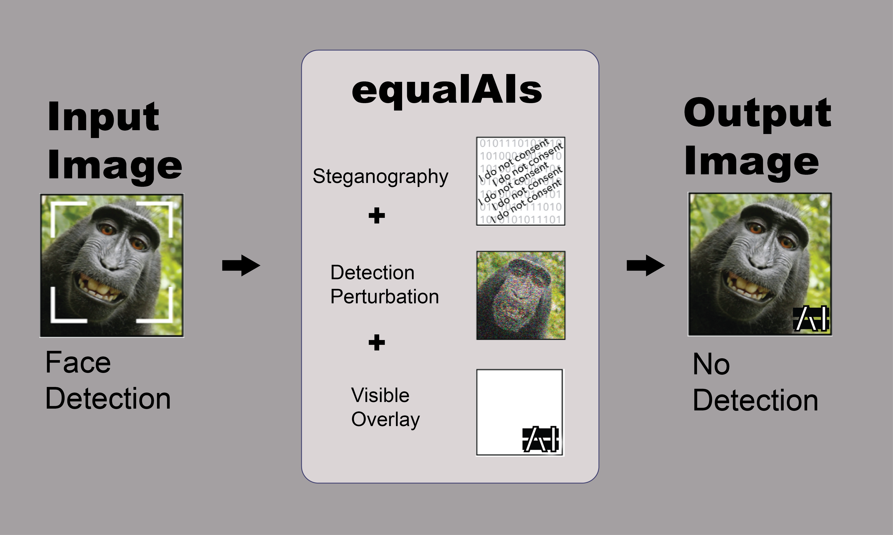
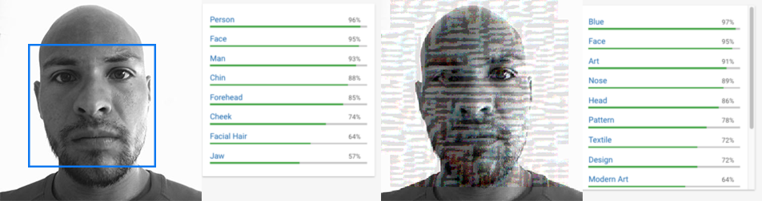

THE TEAM

What are the policy and societal implications of the unprecedented capability for automated, real time identification and tracking of individuals?
Private and public surveillance cameras combined with cheap, pervasive, automated facial recognition and classification technology have made it possible to know, in an automated and scalable way, who a person associates with, where they go and when, what their habits and likes and dislikes are and what their mood and health status is. For the first time in the U.S., the government is compiling a national biometric database far beyond known or even suspected criminals. 80% of the facial database entries are unrelated to arrests, from sources including driver’s licenses and passports. The largest private international tech companies have even bigger facial databases and more advanced facial identification algorithms.
Ubiquitous automated surveillance by the government is likely to have a chilling effect on protected free speech, association and religious activities and weaken the constitutional protections for citizens accused of crimes.
Access to the same data by private actors leads to a host of privacy and policy questions. Foreseeable bad outcomes for individuals include identity theft, stalking, psychological manipulation and reputational and economic damage.
Automated Facial Recognition in the Public and Private Sectors
We believe there should be more public discourse around what choices we want to make as individuals and as a society regarding how our data and images and facial recognition will be used and more tools to make those choices and to express or enforce them. To that end, our work has multiple components, from a FOIA request for information about the federal government’s use of facial recognition to an open sourced technical prototype for changing photographs so that facial recognition systems can’t see faces in them.
1. Policy Investigation Examine the policy and societal implications of the unprecedented capability for automated, real time identification and tracking of individuals resulting from the increasing ubiquity of private and public surveillance cameras combined with cheap, pervasive, automated facial recognition and classification technology. ● FOIA request
2. Technical Adversarial Attack Prototype Show technical feasibility of facial recognition adversarial attacks through creation and improvement of a technical prototype. ● Prototype based on Cleverhans and Goodfellow, et. al.
3. Communication and Raising Awareness Stimulate public awareness and discourse about those policy implications. Presentations at: ● AMLC TomTomFest ● The American Academy of Arts and Science ● Harvard Berkman Klein Center
4. Build Open-Source Community Create an open source repository of code, papers and other resources to facilitate further discussion, research and experimentation on facial recognition, facial recognition adversarial attacks and related policy questions by a broad set of stakeholders (e.g. production engineers as well as academics.) ● Code and resources
5. Industry Partnerships, Enforcement & Regulation Investigate possible policy alternatives to the status quo, such as an opt in or an opt out system to avoid face tagging on media platforms. Consider industry partnerships and voluntary standards or regulatory or other enforcement mechanisms. ● Multi layered filter: steganographic embedding, human and machine readable “do not read” overlay and adversarial perturbation

1. Browse for a picture you would like to EqualAIs (prevent face detection). BROWSE
2. You will get a link to download the new result picture (on some browsers download will commence automatically).
3. Use it on social media and spread the word!
You can find a link to our repository here:
A. An adversarial attack is a perturbation deliberately applied to inputs in order to change classifier predictions while leaving the content easily recognizable to humans. Deep learning classifiers are known to be susceptible to adversarial attacks, with examples in previous work including fooling models into saying a stop sign isn’t there, a cat is guacamole or a toy turtle is a rifle. In our case, the classifiers are neural network models that have been trained to find faces in images. The adversarial attack is a perturbation of the images such that the faces in the perturbed images are still easily recognizable to humans but the model can no longer see them and reports with high confidence that the perturbed images contain no faces. Intriguing properties of neural networks
A. Most adversarial examples are made using the gradient of the neural network model. At each pixel, the algorithm tests what direction of change in pixel value makes the probability of the class we're trying to avoid, in our case "face", decrease the most (another set of adversarial attack approaches is designed to target a certain class, so in that case the direction chosen is the one that most increases the probability of the target class.) The algorithm then makes a slight change in that direction. Because it’s a high dimensional space and neural networks are designed to act very linear to make them easy to optimize, the many small input changes add up to a large change in the output, reliably creating examples that are misclassified by a wide variety of models. Explaining and Harnessing Adversarial Examples
A. Given a particular type of adversarial example, a defender can add examples of that type to their training data and improve their model’s performance, but this adversarial training only improves performance against that particular type of adversarial example. The model will be vulnerable to the next type of adversarial example the attacker comes up with and generally has slightly worse performance than the original model on clean data. No one has designed a strong, general defense algorithm that can resist a wide variety of attacks and no one knows whether it’s theoretically possible, or whether fundamentally the defender or the attacker has the advantage if they both knew their optimal strategies. One reason it’s hard to defend against adversarial examples is that the space of all possible images is enormous and any sample of real data, even the entirety of all photographs ever taken, is an extremely small fraction. There are many, many ways to change a photograph slightly, leaving it easily recognizable to humans, and many of those shift the classifier’s results away from the ground truth label and towards something else. How many, we don’t really know. Adversarial examples are solutions to a complicated optimization problem where we don’t yet have the theoretical tools to describe that problem’s solution space. So while we can generate and defend against known types, in general, we don’t know how many types there are, what properties they have or how to generate or defend against them. Why attacking machine learning is easier than defending it
A. Adversarial attacks work against the most common kinds of image classifiers. An adversarial attack, without deliberate remedial action by the owner of the classifier, makes facial identification and recognition technically impossible, so it has the advantage of not relying on active cooperation by any other parties. Even if it works only partially or briefly, its existence supports a conversation about whether we want to and should be able to have choices about how our society is using biometric data, facial recognition and surveillance.
A. An adversarial attack can provide at best partial protection against all of the uses others might make of an individual’s image. It is limited in which images it will be applied to and how long the attack will be effective. For type of image, it is only applied to images the individual places into a system. It has no effect on images friends, acquaintances, employers, strangers, store owners, property managers, government agencies or anyone else places into the system and photographs of our faces are routinely taken and posted publicly without our knowledge or consent. For length of effectiveness, a specific kind of adversarial attack will only work as long as the owner of the classification model is ignorant of or indifferent to it. If it’s discovered, the model can be retrained to classify that kind of adversarial example correctly. A third limitation is the degradation of the image quality, lowering its utility for the individual who applied the adversarial filter. Some adversarial attacks are so subtle that the change isn’t noticeable to a human observer, but others make very noticeable changes even though the subject is still recognizable.

Opinion: facial recognition surveillance is here but privacy
Facial recognition technology is everywhere it may not be legal
Surveillance technologies. Face recognition technology
US facial recognition database fbi drivers licenses passports
Toilet paper hoarding pushes chinese park to install dispensers that recognize faces
Feel free to leave us a comment or to give some feedback about this project!
We are thankful to the Berkman Klein Center and MIT Media Lab for having had the opportunity to develop the EqualAIs project under the 2018 Assembly program. In particular, we are thankful to the Assembly administrators, board of advisors, Harvard Cyber Law Clinic (Kendra Albert), and other Assembly cohort members who have provided invaluable guidance and support along the way. We also appreciate the support and mentorship of Kade Crockford, James Atwood, and Jessy Lin.